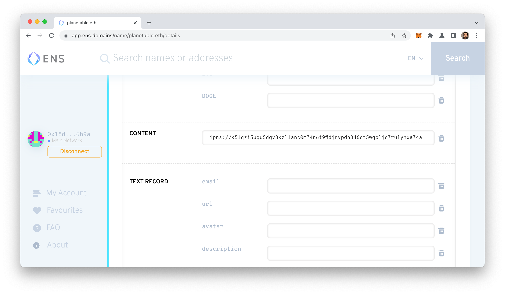

Planet is a free and open source software for publishing and following web content, and it does not require a centralized server or service. It uses IPFS to achieve peer-to-peer content distribution. Furthermore, you can link your content to an Ethereum Name (.eth) so that others can follow you via Planet by the .eth name. Since both IPFS and ENS are decentralized, you can build your websites or follow others, all in a decentralized manner.
Get Started
Have you ever wondered whether setting up a website with an ENS is possible? The answer is yes, and you can set your website to the Content Hash field like setting an A or CNAME for a traditional domain name.
The standard is EIP-1577, and this Content Hash field can accept a few possible values. For example, IPFS -- another centralized content distribution technology. And vitalik.eth website is already running on IPFS.
After you created a website with Planet, right-click on the item in the sidebar, and choose "Copy IPNS," then you will get something that looks like this in pasteboard:
k51qzi5uqu5dgv8kzl1anc0m74n6t9ffdjnypdh846ct5wgpljc7rulynxa74a
Then you can put that IPNS into your ENS ContentHash like this:
Make sure ipns:// is added before that string.
Then your website is linked to your ENS. Congrats! Now you have a decentralized website running on ENS + IPFS!